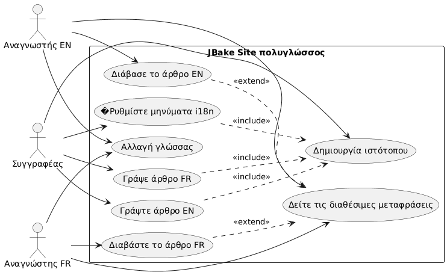
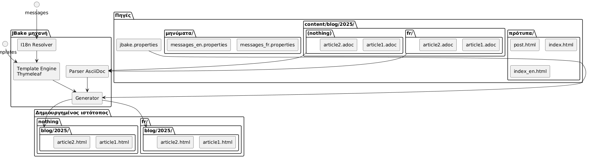
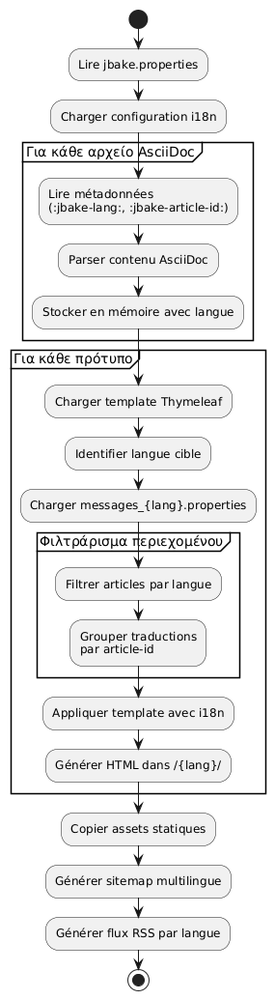

Διεθνεύς одного статικού site JBake με το Thymeleaf
Publié le 20 October 2025
Εισαγωγή
Η διεθνέστευση (i18n) ενός στατικού ιστότοπου μπορεί να φαίνεται περίπλοκη στην αρχή, αλλά το JBake συνδυασμένο με το Thymeleaf προσφέρει ελκυστικές λύσεις για τη δημιουργία ενός πολυγλωσσικού ιστότοπου. Στο αυτό το άρθρο, θα σας δείξω πώς εφάρμοσα το i18n στο blog μου, καλύπτοντας τόσο το templating όσο και τη διαχείριση των άρθρων σε πολλές γλώσσες.
Διάγραμμα περιπτώσεων χρήσης (Use Case)

Αρχιτεκτονική της διεθνεύς ανάπτυξης
Η προσέγγισή μας βασίζεται σε δύο στύλους:
-
Η διεθνέστευση του templatingχρήση των αρχείων μηνυμάτων Thymeleaf για τα στοιχεία της διεπαφής
-
Η διεθνησιοποίηση του περιεχομένουΟργανωση άρθρων ανά γλώσσα σε μια ειδική δομή φακέλων
Διάγραμμα δομής (Οργάνωση αρχείων)

Γιατί αυτή η προσέγγιση;
Αυτή η διαχωρισμός επιτρέπει:
-
Διατηρήστε τη συνέπεια στη διεπαφή, ανεξάρτητα από τη γλώσσα
-
Διαχειρίζε ανεξάρτητα το περιεχόμενο και τις μεταφράσεις των άρθρων
-
Ευκολοποίηση της προσθήκης νέων γλωσσών χωρίς σημαντικό ανασχεδιασμό
-
Επιτρέψτε άρθρα που είναι διαθέσιμα μόνο σε ορισμένες γλώσσες.
Διάγραμμα συστατικών

I18n του templating με Thymeleaf
Δομή των αρχείων μηνυμάτων
Η πρώτη βήμα είναι να δημιουργηθούν τα αρχεία ιδιοτήτων για κάθε υποστηριζόμενη γλώσσα:
src/jbake/templates/
├── messages.properties # Fallback par défaut
├── messages_fr.properties # Français
├── messages_en.properties # Anglais
└── messages_de.properties # AllemandΠεριεχόμενο των αρχείων μηνυμάτων
Αυτό είναι ένα παράδειγμα αρχείου`messages_fr.properties`:
# Navigation
nav.home=Accueil
nav.blog=Blog
nav.about=À propos
nav.contact=Contact
# Articles
article.readmore=Lire la suite
article.published=Publié le
article.tags=Étiquettes
article.also.available=Également disponible en
# Interface
site.title=Mon Blog Technique
site.description=Partage de connaissances et expériences
footer.copyright=© 2025 Tous droits réservés
search.placeholder=Rechercher un article...Και το αγγλικό του αντίστοιχο`messages_en.properties`:
# Navigation
nav.home=Home
nav.blog=Blog
nav.about=About
nav.contact=Contact
# Articles
article.readmore=Read more
article.published=Published on
article.tags=Tags
article.also.available=Also available in
# Interface
site.title=My Tech Blog
site.description=Sharing knowledge and experiences
footer.copyright=© 2025 All rights reserved
search.placeholder=Search articles...Χρήση στα πρότυπα
Στα πρότυπα Thymeleaf σας, χρησιμοποιήστε τη σύνταξη`#{}`για να αποκτήσετε πρόσβαση στα μηνύματα:
<!DOCTYPE html>
<html xmlns:th="http://www.thymeleaf.org">
<head>
<title th:text="#{site.title}">Mon Blog</title>
<meta name="description" th:content="#{site.description}" />
</head>
<body>
<nav>
<a th:href="@{/}" th:text="#{nav.home}">Accueil</a>
<a th:href="@{/blog/}" th:text="#{nav.blog}">Blog</a>
<a th:href="@{/about.html}" th:text="#{nav.about}">À propos</a>
</nav>
<footer>
<p th:text="#{footer.copyright}">Copyright</p>
</footer>
</body>
</html>Διάγραμμα ακολουθίας - Λύση i18n
Failed to generate image: PlantUML preprocessing failed: [From <input> (line 4) ]
@startuml
actor Auteur
participant JBake
participant "AsciiDoc
^^^^^
Syntax Error? (Assumed diagram type: sequence)
@startuml
actor Auteur
participant JBake
participant "AsciiDoc
αναλυτής" as parser
participant "Thymeleaf
Μηχανή" as thymeleaf
participant "I18n\nΕπιλυτής" as i18n
database "messages_*.properties" as messages
Auteur -> JBake: jbake -b
activate JBake
JBake -> parser: Lire article.fr.adoc
activate parser
parser --> JBake: Contenu + métadonnées\n(lang=fr, article-id=xyz)
deactivate parser
JBake -> parser: Lire article.en.adoc
activate parser
parser --> JBake: Contenu + métadonnées\n(lang=en, article-id=xyz)
deactivate parser
JBake -> thymeleaf: Générer page FR
activate thymeleaf
thymeleaf -> i18n: Résoudre #{nav.home}
activate i18n
i18n -> messages: Lire messages_fr.properties
messages --> i18n: "Αρχική"
i18n --> thymeleaf: "Αρχική"
deactivate i18n
thymeleaf -> JBake: Rechercher traductions\n(article-id=xyz, lang!=fr)
JBake --> thymeleaf: article.en.html trouvé
thymeleaf --> JBake: /fr/blog/article.html
deactivate thymeleaf
JBake -> thymeleaf: Générer page EN
activate thymeleaf
thymeleaf -> i18n: Résoudre #{nav.home}
activate i18n
i18n -> messages: Lire messages_en.properties
messages --> i18n: "σπίτι"
i18n --> thymeleaf: "σπίτι"
deactivate i18n
thymeleaf -> JBake: Rechercher traductions\n(article-id=xyz, lang!=en)
JBake --> thymeleaf: article.fr.html trouvé
thymeleaf --> JBake: /en/blog/article.html
deactivate thymeleaf
JBake --> Auteur: Site généré
deactivate JBake
@enduml
Ρύθμιση της τοπικότητας στο JBake
Στο αρχείο σας`jbake.properties`, Ορίστε την προεπιλεγμένη locale :
# Locale par défaut
thymeleaf.locale=fr
# Encodage
template.encoding=UTF-8I18n των άρθρων : οργάνωση ανά φάκελο
Διάγραμμα ροής (Flow) - Παραγωγή

Δομή φακέλων
Αντί να χρησιμοποιώ προσθέματα στα ονόματα αρχείων, προτίμησα μια οργάνωση ανά φάκελο που προσφέρει περισσότερη σαφήνεια και δυνατότητα συντήρησης:
content/blog/
├── 2024/
│ ├── fr/
│ │ ├── introduction-jbake.adoc
│ │ ├── guide-thymeleaf.adoc
│ │ └── astuces-asciidoc.adoc
│ └── en/
│ ├── introduction-jbake.adoc
│ ├── thymeleaf-guide.adoc
│ └── asciidoc-tips.adoc
└── 2025/
├── fr/
│ └── internationalisation-jbake.adoc
└── en/
└── jbake-internationalization.adocΠλεονεκτήματα αυτής της προσέγγισης
Αυτή η δομή προσφέρει πολλά πλεονεκτήματα :
-
Καθαρός διαχωρισμός: κάθε γλώσσα έχει το δικό της χώρο
-
Ευέλικτη ονοματοδότηση: τα αρχεία μπορούν να έχουν διαφορετικά ονόματα ανάλογα τη γλώσσα
-
Κλιμακωσιμότηταεύκολο να προσθέσεις μια νέα γλώσσα
-
Οργάνωση φυσικήακολουθεί τη χρονική λογική του JBake
Μεταδεδομένα των άρθρων
Κάθε άρθρο πρέπει να περιέχει μεταδεδομένα ώστε να επιτρέψει τη σύνδεση μεταξύ των μεταφράσεων. Εδώ είναι ένα παράδειγμα :
Γαλλική έκδοση(2025/fr/internationalisation-jbake.adoc) :
= Internationalisation d'un site statique JBake
:jbake-type: post
:jbake-status: published
:jbake-date: 2025-10-20
:jbake-lang: fr
:jbake-article-id: jbake-i18n-thymeleaf
:jbake-tags: jbake, thymeleaf, i18n
:jbake-description: Guide pour mettre en place l'i18n avec JBakeΑγγλική έκδοση(2025/en/jbake-internationalization.adoc) :
= Internationalizing a JBake Static Site
:jbake-type: post
:jbake-status: published
:jbake-date: 2025-10-20
:jbake-lang: en
:jbake-article-id: jbake-i18n-thymeleaf
:jbake-tags: jbake, thymeleaf, i18n
:jbake-description: Guide to implement i18n with JBakeΣημείωση: Το χαρακτηριστικό`:jbake-article-id:`είναι ζωτικό: επιτρέπει τη σύνδεση των διαφορετικών μεταφράσεων του ίδιου άρθρου.
�Ρύθμιση των URL
σε`jbake.properties`, Ρυθμίστε το πρότυπο URL για να συμπεριλάβετε τη γλώσσα :
# Pattern d'URL avec langue
post.permalink.pattern=:lang/blog/:year/:name.html
# Langue par défaut
site.default.lang=frΑυτό θα δημιουργήσει URL του τύπου :
-
/fr/blog/2025/internationalisation-jbake.html -
/en/blog/2025/jbake-internationalization.html
Πρότυπα για πολυγλωτική εμφάνιση
Πρότυπο άρθρου με επιλογή γλώσσας
Δημιουργήστε ένα πρότυπο`post.html`που εμφανίζει τις διαθέσιμες μεταφράσεις:
<!DOCTYPE html>
<html xmlns:th="http://www.thymeleaf.org">
<head>
<title th:text="${content.title}">Article</title>
</head>
<body>
<article>
<header>
<h1 th:text="${content.title}">Titre</h1>
<div class="article-meta">
<time th:text="${#dates.format(content.date, 'dd MMMM yyyy')}"
th:attr="datetime=${#dates.format(content.date, 'yyyy-MM-dd')}">
Date
</time>
<!-- Sélecteur de traductions -->
<div class="translations" th:if="${content['article-id']}">
<span th:text="#{article.also.available}">Aussi disponible en :</span>
<ul class="language-list">
<li th:each="post : ${published_posts}"
th:if="${post['article-id'] == content['article-id'] and post.lang != content.lang}">
<a th:href="${post.uri}"
th:text="${post.lang.toUpperCase()}">
LANG
</a>
</li>
</ul>
</div>
</div>
</header>
<div class="content" th:utext="${content.body}">
Contenu de l'article
</div>
<footer class="article-footer">
<div class="tags" th:if="${content.tags}">
<span th:text="#{article.tags}">Étiquettes :</span>
<span th:each="tag : ${content.tags}">
<a th:href="@{/tags/{tag}.html(tag=${tag})}"
th:text="${tag}">tag</a>
</span>
</div>
</footer>
</article>
</body>
</html>Ευρετήριο φιλτραρισμένο ανά γλώσσα
Δημιουργήστε πρότυπα ευρετηρίου για κάθε γλώσσα:
index.html(ευρετήριο γαλλικό) :
<!DOCTYPE html>
<html xmlns:th="http://www.thymeleaf.org">
<head>
<title th:text="#{site.title}">Mon Blog</title>
</head>
<body>
<main>
<h1 th:text="#{nav.blog}">Blog</h1>
<div class="articles-list">
<article th:each="post : ${published_posts}"
th:if="${post.lang == 'fr'}">
<h2>
<a th:href="${post.uri}" th:text="${post.title}">Titre</a>
</h2>
<time th:text="${#dates.format(post.date, 'dd MMMM yyyy')}">
Date
</time>
<p th:text="${post.description}">Description</p>
<a th:href="${post.uri}" th:text="#{article.readmore}">
Lire la suite
</a>
</article>
</div>
</main>
</body>
</html>index_en.html(Αγγλικό ευρετήριο) :
<!DOCTYPE html>
<html xmlns:th="http://www.thymeleaf.org">
<head>
<title th:text="#{site.title}">My Blog</title>
</head>
<body>
<main>
<h1 th:text="#{nav.blog}">Blog</h1>
<div class="articles-list">
<article th:each="post : ${published_posts}"
th:if="${post.lang == 'en'}">
<h2>
<a th:href="${post.uri}" th:text="${post.title}">Title</a>
</h2>
<time th:text="${#dates.format(post.date, 'dd MMMM yyyy')}">
Date
</time>
<p th:text="${post.description}">Description</p>
<a th:href="${post.uri}" th:text="#{article.readmore}">
Read more
</a>
</article>
</div>
</main>
</body>
</html>Πλοήγηση μεταξύ γλωσσών
παγκόσμιος επιλογέας γλώσσας
Διάγραμμα ροής - Ανάγνωση χρήστη

Προσθέστε ένα επιλογέα γλώσσας στο κύριο πρότυπό σας :
<nav class="language-switcher">
<a href="/index.html"
th:classappend="${content.lang == 'fr'} ? 'active'"
title="Français">
🇫🇷 FR
</a>
<a href="/en/index.html"
th:classappend="${content.lang == 'en'} ? 'active'"
title="English">
🇬🇧 EN
</a>
</nav>Στυλ CSS για τον επιλογέα
.language-switcher {
display: flex;
gap: 1rem;
padding: 0.5rem;
background: #f5f5f5;
border-radius: 4px;
}
.language-switcher a {
padding: 0.5rem 1rem;
text-decoration: none;
color: #333;
border-radius: 4px;
transition: background 0.2s;
}
.language-switcher a:hover {
background: #e0e0e0;
}
.language-switcher a.active {
background: #007bff;
color: white;
}
.translations {
margin: 1rem 0;
padding: 1rem;
background: #f8f9fa;
border-left: 4px solid #007bff;
}
.language-list {
display: inline-flex;
gap: 0.5rem;
list-style: none;
padding: 0;
margin: 0;
}
.language-list li::after {
content: "•";
margin-left: 0.5rem;
}
.language-list li:last-child::after {
content: "";
}�Ροή RSS ανά γλώσσα
Για να έχετε χωριστά ροές RSS ανά γλώσσα, δημιουργήστε ξεχωριστά προτύπα:
feed.xml(γαλλική ροή) :
<?xml version="1.0" encoding="UTF-8"?>
<rss version="2.0" xmlns:th="http://www.thymeleaf.org">
<channel>
<title th:text="#{site.title}">Mon Blog</title>
<link th:text="${config.site_host}">http://example.com</link>
<description th:text="#{site.description}">Description</description>
<language>fr</language>
<item th:each="post : ${published_posts}"
th:if="${post.lang == 'fr'}">
<title th:text="${post.title}">Titre</title>
<link th:text="${config.site_host + post.uri}">Lien</link>
<pubDate th:text="${#dates.format(post.date, 'EEE, dd MMM yyyy HH:mm:ss Z')}">
Date
</pubDate>
<description th:text="${post.description}">Description</description>
</item>
</channel>
</rss>Καλές πρακτικές και συμβουλές
1. Συμφωνία των αναγνωριστικών άρθρων
Βεβαιωθείτε ότι`:jbake-article-id:`είναι identique για όλες τις μεταφράσεις ενός ίδιου άρθρου. Χρησιμοποιήστε μια συνεπή μορφή :
-
Προτιμάτε τα αναγνωριστικά στα αγγλικά για παγκόσμιότητα
-
Χρησιμοποιείτε παύλες για να χωρίζετε τις λέξεις
-
Αποφύγετε τους ειδικούς χαρακτήρες
2. Συνεπείς ημερομηνίες
Οι μεταφράσεις ενός άρθρου πρέπει να έχουν την ίδια ημερομηνία δημοσίευσης (:jbake-date:). Αυτό διευκολύνει την ταξινόμηση και τη χρονολογική εμφάνιση.
3. Ετικέτες πολυγλωσσικές
Για τα tags, έχετε δύο επιλογές:
Επλογή 1 : ετικέτες ουνιρσέρσαλες στα αγγλίκά
:jbake-tags: java, spring-boot, microservicesΕπιλογή 2 : Ετικέτες μεταφρασμένες με mapping
# Version française
:jbake-tags: java, spring-boot, microservices
# Version anglaise
:jbake-tags: java, spring-boot, microservices4. Διαχείριση άρθρων που δεν έχουν μεταφραστεί
Δεν είναι υποχρεωτικό να μεταφράσετε όλα τα άρθρα. Εάν ένα άρθρο υπάρχει μόνο σε μια γλώσσα, τότε δεν θα εμφανιστεί απλώς στα listings της άλλης γλώσσας.
5. Πολυγλωσσικός sitemap
Δημιουργήστε ένα sitemap που περιλαμβάνει όλες τις γλώσσες :
<?xml version="1.0" encoding="UTF-8"?>
<urlset xmlns="http://www.sitemaps.org/schemas/sitemap/0.9"
xmlns:xhtml="http://www.w3.org/1999/xhtml"
xmlns:th="http://www.thymeleaf.org">
<url th:each="post : ${published_posts}">
<loc th:text="${config.site_host + post.uri}">URL</loc>
<lastmod th:text="${#dates.format(post.date, 'yyyy-MM-dd')}">Date</lastmod>
<!-- Liens alternatifs pour les traductions -->
<xhtml:link th:each="translation : ${published_posts}"
th:if="${translation['article-id'] == post['article-id'] and translation.lang != post.lang}"
rel="alternate"
th:attr="hreflang=${translation.lang},href=${config.site_host + translation.uri}" />
</url>
</urlset>Συμπέρασμα
Η διεθντοποίηση ενός site JBake με Thymeleaf είναι μια ισχυρή και συντηρήσιμη προσέγγιση. Χωρίζοντας το i18n από το templating (μέσω των αρχείων μηνυμάτων) και το i18n από το περιεχόμενο (μέσω της οργάνωσης σε φακέλους), παίρνετε ένα ευέλικτο σύστημα που μπορεί να εξελιχθεί εύκολα.
Τα βασικά σημεία που πρέπει να θυμηθείς:
-
Αρχεία μηνυμάτων Thymeleafγια τη διεπαφή χρήστη
-
Οργάνωση ανά φάκελο(έτος/γλώσσα) για τα άρθρα
-
Αναγνωριστικά άρθρουγια τη σύνδεση των μεταφράσεων
-
Πρότυπα δεσμευμέναγια κάθε γλώσσα
-
σαφείς URLσυμπεριλαμβανομένου του κώδικα γλώσσας
Διάγραμμα διανομής
Failed to generate image: PlantUML preprocessing failed: [From <input> (line 14) ]
@startuml
node "Μηχανή ανάπτυξης" {
artifact "Πηγές" {
folder "χαρούμενος/"
folder "πρότυπα/"
folder "assets/"
}
component "JBake CLI" as jbake
Sources --> jbake : jbake -b
}
node "Σερβερ κατασκευής
^^^^^
Syntax Error? (Assumed diagram type: component)
@startuml
node "Μηχανή ανάπτυξης" {
artifact "Πηγές" {
folder "χαρούμενος/"
folder "πρότυπα/"
folder "assets/"
}
component "JBake CLI" as jbake
Sources --> jbake : jbake -b
}
node "Σερβερ κατασκευής
(CI/CD)" {
component "GitHub Actions
ή GitLab CI" as ci
jbake --> ci : push
}
cloud "CDN / Φιλοξενία" {
node "Στατικός διακομιστής web" {
artifact "Δημιουργημένο ιστότοπος" {
folder "/fr/blog/"
folder "/en/blog/"
folder "/assets/"
}
}
}
ci --> "Δημιουργημένο ιστότοπος" : déploiement
actor "Αναγνώστες" as users
users --> "Στατικός διακομιστής web" : HTTPS
@enduml
Αυτή η αρχιτεκτονική σας επιτρέπει να ξεκινήσετε απλώς με δύο γλώσσες και να προσθέσετε άλλες χωρίς σημαντικό ανασχέδιασμα. Όλο το σύστημα παραμένει πλήρως στατικό και αποδοτικό, πιστό στην φιλοσοφία του JBake.
Καλή πολυγλωσσική ανάπτυξη! 🌍